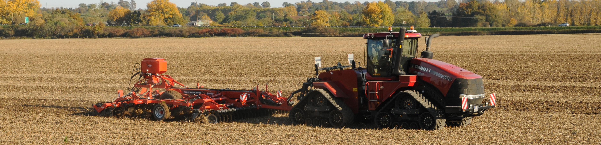
Deep Tillage Equipment
Top Stories.
- Farm machinery is my business - Daily Nation
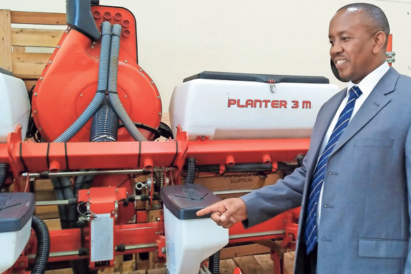 An inspiring story of how Geoffrey Nyaberi built the first
indigenously owned farm machinery company from scratch....
- Makueni farmers abandon maize for drought-resistant crops
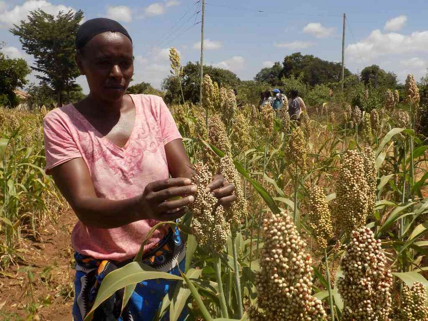As the drought continues to ravage parts of the country,
farmers in Makueni have nothing to worry about since they have millet, sorghum and green grams to eat...
- Potato processors contract farmers to meet consumer demand
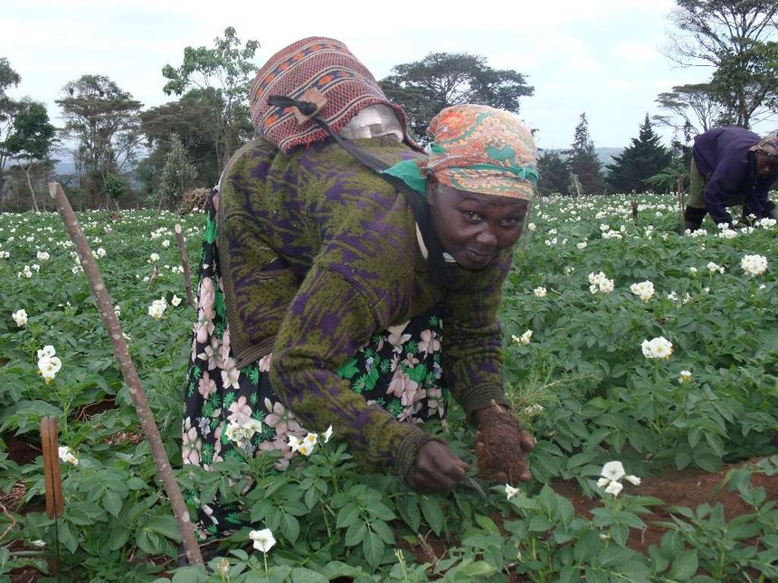 Some 23,000 farmers in 13 potato-producing counties have signed contracts
with various processors in Kenya to buy the produce to supply...
- Wildplants related to maize and wheat missing in crop banks
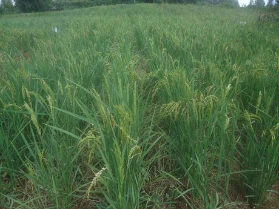 Many of the wild plants that will be used for future food supply have not been conserved in crop banks according to a new research.......
- Karura forest gets biological control of pests
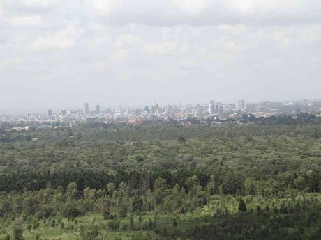Foresters at Karura have introduced biological control treatment to tree seedlings to fight pests and diseases.
- Eldoret show focuses on mechanised agriculture
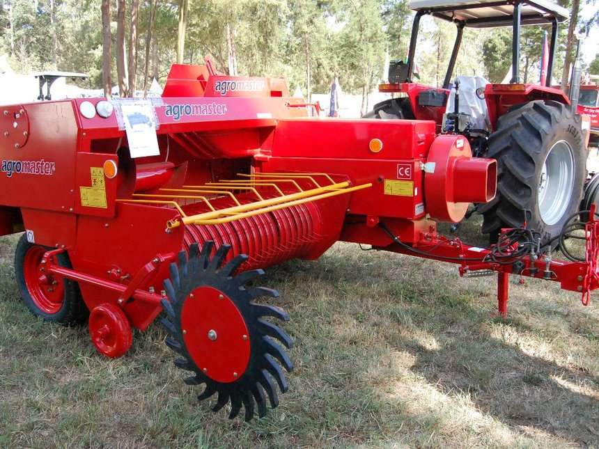Under the theme ‘Enhancing Technology in Agriculture and Industry for Food Security and National Growth’, the fair, that was held last week at the Eldoret show ground...
- Makueni farmers adopt technology in horticulture farming
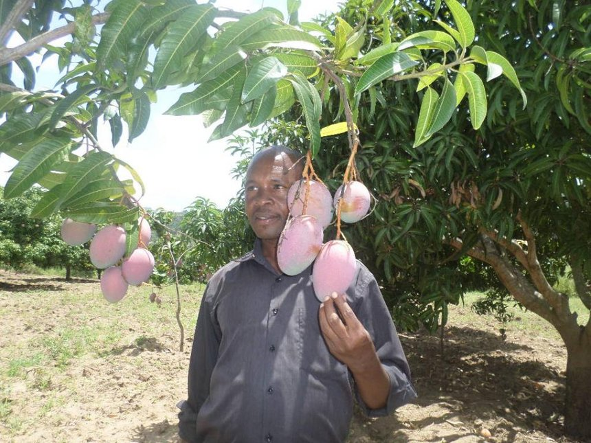Julius Mutio, a middle aged man from Makueni county, is making a kill from mango and orange fruit farming....
- Avocado disease hits Murang’a, Kiambu
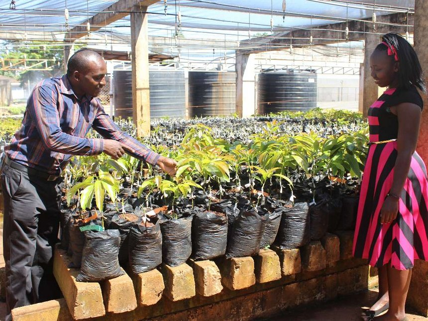Avocado farmers have been cautioned against a disease that has been detected in Murang’a and neighbouring counties....
- Jaramogi university makes biscuits, porridge flour from crickets
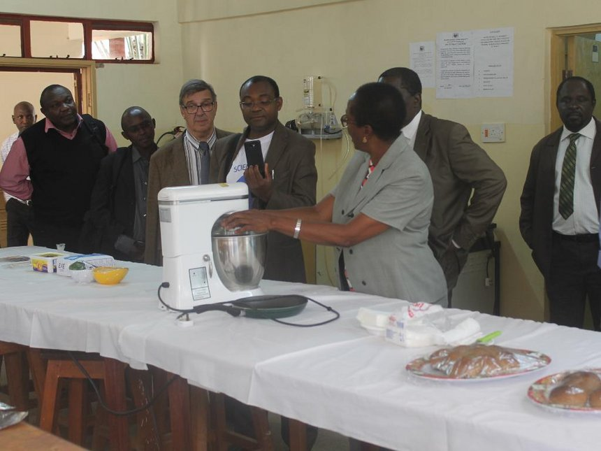Jaramogi University,a local university has started using crickets to make queen cakes, biscuits and porridge flour....
- Embu farmer finds riches in growing tree tomato fruits
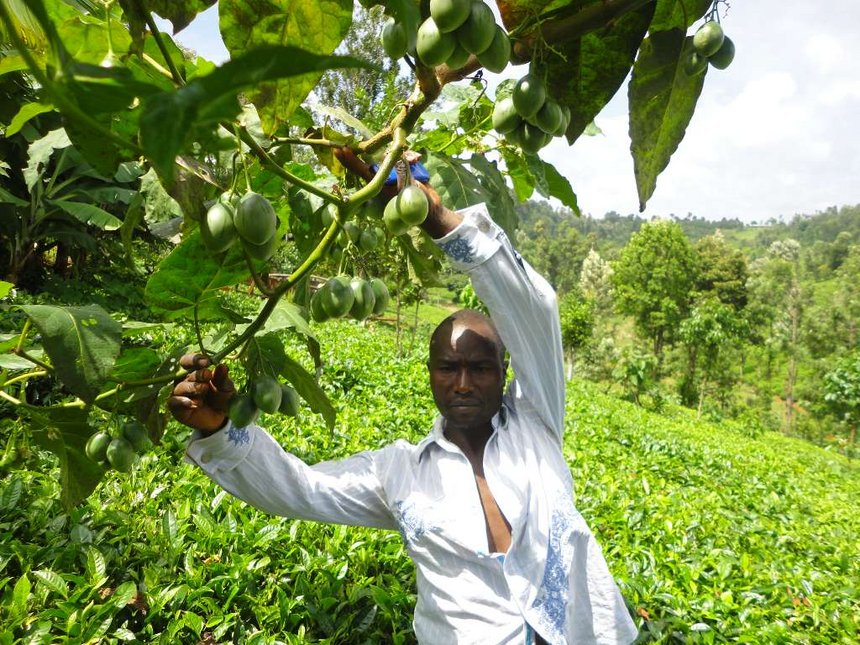Suleiman Njeru started with tomato farming in 2010 but the crop did not yield much and he incurred huge losses due to the harsh humid climate....
- KUHN Baler, Nakuru - @15,000 per day
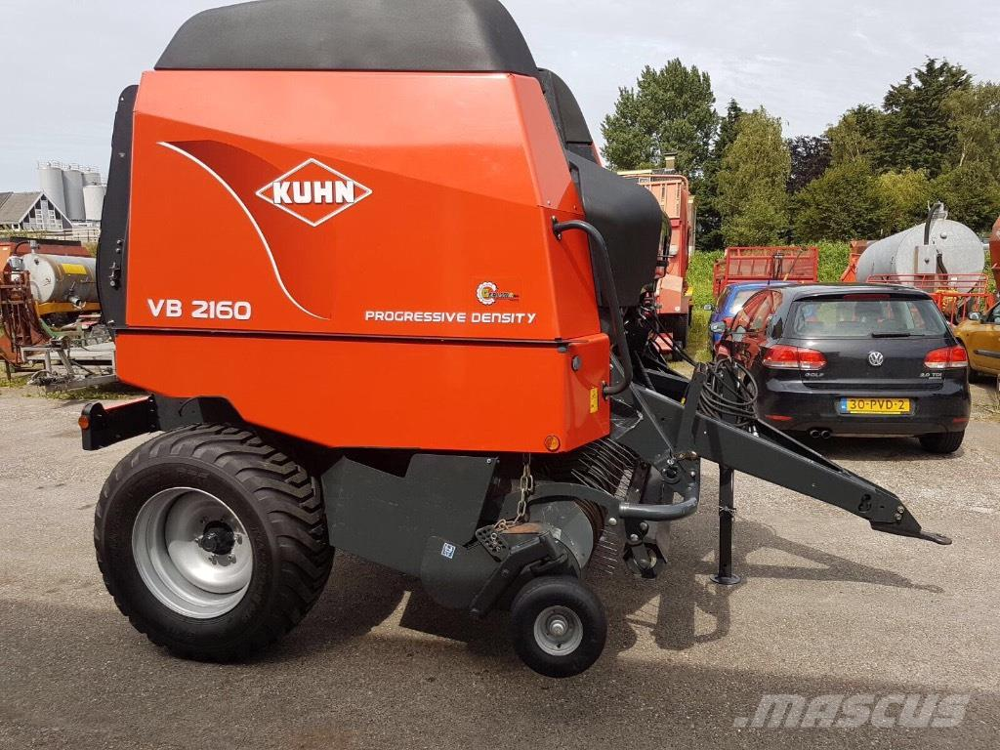KUHN Bailer. The KUHN baler series 500. Well known for its
great and compact size bales with rope provision.
Location: Nakuru( Behind Kenbelt Industrial Park.)
Price: Kshs 15,000
No machine operator provided.
- Cicoria Baler, Nairobi - @10,000 per day
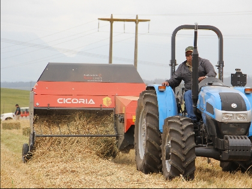CICORIA Bailer. The CICORIA baler greatly competes against most brands, including the KUHN series 500. Is also easier to operate.
Location: Nairobi(Opposite Wells Fargo. Old Mombasa Road.)
Price: Kshs 10,000
Machine operator provided if required(Operator fee is separate).
- KUHN Mower, Narok - @6,000 per day
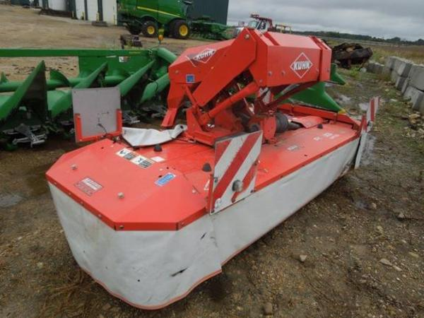 KUHN Mowers. The KUHN Mower is well known for its easy operation. Its compact nature also
makes it more portable due to its light weight.
Location: Narok.(Call for more details)
Price: Kshs 6000
No machine operator provided.
- KUHN Tractor, Nairobi - @40,000 per day
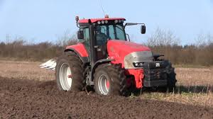KUHN Tractor Elite Series. 300 horse power makes it the best to trail along almost any farming equipment.
Location: Nairobi.(Call for more details)
Price: Kshs 40,000
Operator can be provided if required(at a fee)
- KUHN Planter, Kitale - @14,000 per day
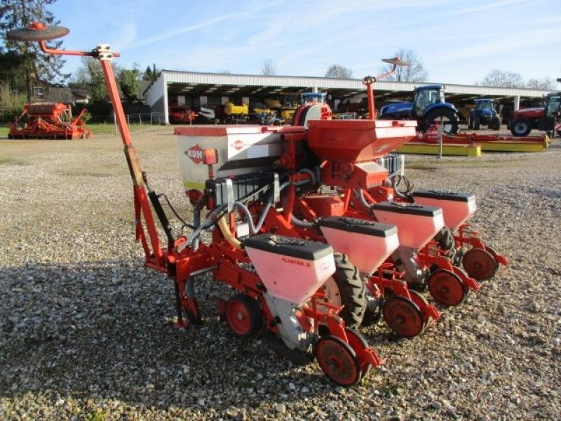KUHN Planter s650. Can plant upto 32 rows on each run.
Location: Kitale.(Call for more details)
Price: Kshs 14,000
No machine operator provided
- KUHN Planter, Kitale - @12,500 per day
KUHN Planter s650. Can plant upto 32 rows on each run. No disposal filters included.
Location: Kitale.(Call for more details)
Price: Kshs 12,500
No machine operator provided
- KUHN Sprayers, Bura - @23,000 per day
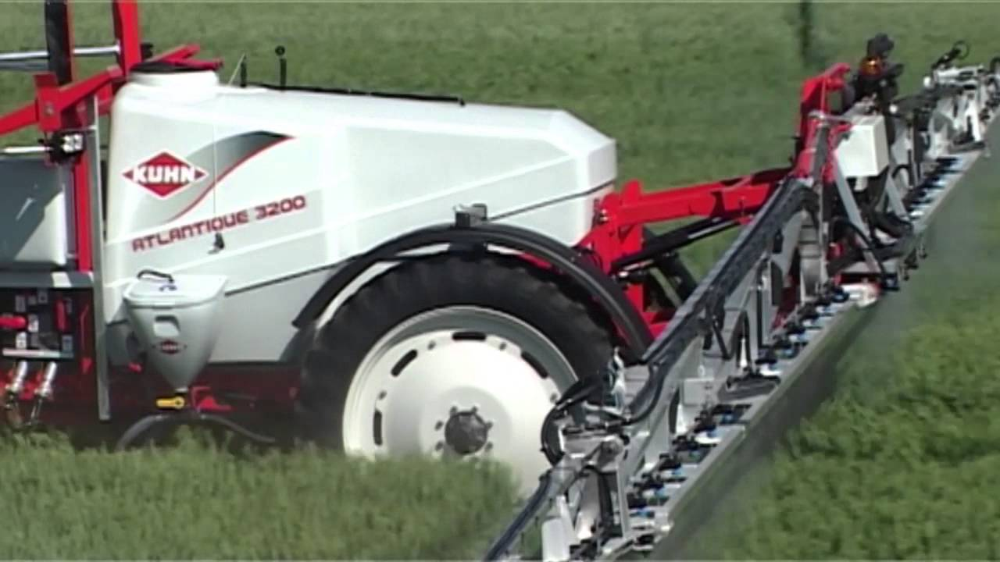KUHN Sprayer Series 92NM. Long range spray jets makes sure it covers a long area
at a go with less wastage.
Location: Bura(Near Galole Irrigation Scheme.)
Price: Kshs 23,000
No machine operator provided.
- KUHN Planter, Molo - @9,000 per day
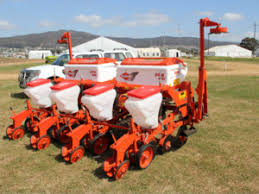Small KUHN S Series Planter. Does 12 rows on each run. Disposal filters included.
Location: Molo, Nakuru.
Price: Kshs 9,000
No machine operator provided.